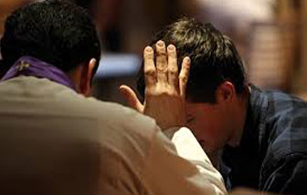
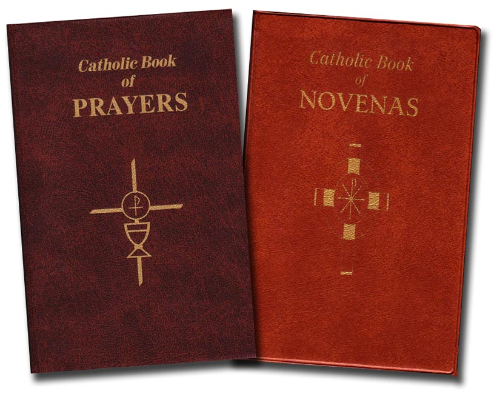

Events at a Glance
Mass and Confession Times

Devotions

Prayers and Novenas

5
Jun
The Saint Anne Society Upcoming Events
The next Monthly Meeting is Sunday June 5 at 10:00AM in the Church Conference room.
11
Jun
Feast of Saint Anthony
- Gather at Saint James at 9:00AM. We will the have our procession at 9:30AM and Mass at 10:00AM.
- The Family Picnic Celebration will begin at 11:00AM-3:00PM.
- There will be great food, beer, a puppet show, juggler, glitter tattoos, and music.
- Costs: Adults $10, Children $6 (under age 5 are free), or $30 per Family
18
Jun
Day of Reflection
- From 9:00AM-2:30PM
- Mass will begin at 9:00AM followed by breakfast in the Parish Center
- Guest Speakers will be:
- Pastor: Rev. Alberto Tamayo / Topic: Joy
- Spiritual Director: Pat Stephens / Topic: Spiritual Vitality
- Religious Sister Geraldine Contento, MPF / Topic: Affirmed in God's Love
- Brown bag lunch and we will provide cold drinks and dessert.
- No Cost: Free Will Offering. To register, call Rosemary at 732-212-8226 or Rose Marie at 732-578-0162.
27
Jun
Free Basketball Camp (for girls ages 9-15)
Attend a free basketball camp in Saint Anthony's gym during the week of June 27th. Spend five days learning and enjoying the FIVE "Free;Fun;Fellowship;Forever Friends"
Learn teamwork and the skills to play basketball at any level.
Presented by Jane Chandler, a member of the Hall of Fame from Saint Peter's University, and her staff. Permission slips are in the Gathering Area. Please return by June 19th. If you have any questions, please call Jane at 732-530-5867.
Seven Sacraments of the Church
- The Seven Sacraments of the Church
- The seven sacraments are: Baptism, Confirmation, Eucharist, Reconciliation, Anointing of the Sick, Holy Orders and Matrimony. The seven sacraments touch all stages and all the important moments of Christian life. They give birth and increase, healing and mission to the Christian's life of Faith. There is thus a certain resemblance between the stages of natural life and the stages of spiritual life.
- Sacraments of Christian Initiation
- The Sacraments of Christian Initiation-Baptism, Confirmation and the Eucharist lay the foundations of every Christian life. The faithful are born anew by Baptism, strengthened by the sacrament of Confirmation, and receive in the Eucharist the food of eternal life. By means of these sacraments of Christian Initiation, they thus receive in increasing measure the treasures of the divine life and advance toward perfection of charity.
- Baptism
- Holy Baptism is the basis of the whole Christian life, the gateway to life in the Spirit, and the door which gives access to the other sacraments. Baptism is the Sacrament by which we are initiated into the life of Christ and become a member of God's household. Baptism may take place at any age after proper catechetical instruction. For Adults this process is through R.C.I.A. (Rite of Christian Initiation of Adults). For Children of Catechetical Age (7 or older) this process is through R.C.I.C. (Rite of Christian Initiation of Children). Parents of infants or small children are required to attend a baptismal instruction class. After attending the class they may call the parish office and arrange a date for the Baptism. The Catholic Church requires 2 Sponsors for Baptism, commonly referred to as “Godparents.” The Church asks that there be one male sponsor and one female sponsor. At least one of these must be a Catholic who has received the sacraments of baptism, confirmation, Eucharist and be at least 16 years of age. If the individual is married they must have been married in a Catholic Ceremony recognized by the Catholic Church. If you choose one of the sponsors who is not a Catholic that person must be a Christian who has received the Sacrament of Baptism. They are not properly speaking, a sponsor or godparent but referred to as a “Christian Witness.” The purpose of the sponsor is to assist the child in the development of their faith. For this reason you are asked to choose someone who practices their faith and not simply as an award to a faithful friend or relative. Once a godparent has been chosen and the baptism has been performed the record cannot be altered later if you have a falling out with the godparent or Christian witness. You are urged to take this seriously and choose wisely. Should you have a special circumstance, for example a teenage pregnancy, an older child, a child with a disability, etc. please speak with the Pastor.
- Confirmation
- Baptism, the Eucharist, and the sacrament of Confirmation together constitute the "sacraments of Christian Initiation", whose unity must be safeguarded. It must be explained to the faithful that the reception of the sacrament of Confirmation is necessary for the completion of baptismal grace. For "by the sacrament of Confirmation, [the baptized] are more perfectly bound to the Church and are enriched with a special strength of the Holy Spirit. Hence they are, as true witnesses, of Christ, more strictly obliged to spread and defend the faith by word and deed." Confirmation is a two year catechetical program overseen by the Director of Religious Education. It begins in 7th grade and runs through the entire 8th Grade. In the student's freshman year, usually September, they attend a retreat in preparation for reception of the Sacrament in October of the same year. In preparation for the Sacrament the students receive Catechetical instruction, perform community service, attend a retreat and receive the Sacrament of Reconciliation. Older Children or adults should call the Director of the R.C.I.A. (Rite of Christian Initiation of Adults) program to complete their sacraments.
- First Eucharist
- In the organic whole, the Eucharist occupies a unique place as the "Sacrament of Sacraments": all other sacraments are ordered to it as to their end. The Eucharist is "the source and summit of the Christian life". The other sacraments, and indeed all ecclesiastical ministries and works of the apostolate, are bound up with the Eucharist and are oriented toward it. For in the blessed Eucharist is contained the whole spiritual good of the Church, namely Christ Himself. The reception of First Eucharist follows adequate Catechetical instruction, usually in the second grade level. Children first receive the Sacrament of Reconciliation, generally during the Penitential Season of Lent. First Eucharist is celebrated on the Sunday's following Easter at a Mass held in the afternoon. Every Catholic is encouraged to receive communion weekly at Sunday Mass and they are urged to make a frequent good confession, especially if in a state of Mortal Sin. It is fitting that First Eucharist be received during the Easter Season. Due to the large number of children receiving, each child will be assigned a particular date by the Office of Religious Education. Your cooperation is appreciated. Children may wear any clean and 'dressy' clothing of any color. There is no requirement for headwear, footwear or bodywear beyond being neat, clean and presentable.
- Sacraments of Healing
- Through the sacraments of Christian initiation, man receives the new life of Christ. Now we carry this life "in earthen vessels," and it remains "hidden with Christ in God." We are still in our "earthly tent," subject to suffering, illness, and death. This new life as a child of God can be weakened and even lost by sin. The Lord Jesus Christ, physician of our souls and bodies, who forgave the sins of the paralytic and restored him to bodily health, has willed that his Church continue, in the power of the Holy Spirit, his work of healing and salvation, even among her own members. This is the purpose of the two sacraments of healing: the sacrament of Penance and the sacrament of Anointing of the Sick.
- Sacrament of Penance
- Confessions are held on Saturdays throughout the year, with the exception of Holy Saturday from 4:00 pm - 4:30 pm and extended hours during the sacred season of Lent. The Reconciliation room has options for face-to-face or behind the screen confessions.
- Annointing of the Sick
- By the sacred anointing of the sick and the prayer of the priests the whole Church commends those who are ill to the suffering and glorified Lord, that he may raise them up and save them. The reception of this sacrament is available to any Catholic who finds themselves in grave physical, spiritual or mental state of illness. Arrangements should be made through the parish office for those who are homebound. If after hours, or on weekends, and the person is in imminent danger of death, leave a message. The phone is checked periodically throughout the day. If you are having surgery you may ask a priest to anoint you before the surgery. Call the office to schedule an appointment. Please do not arrange for someone else to be anointed unless you are immediately related to the person in need and know they desire to receive the sacrament. This avoids embarrassing the priest and the ill person avoiding an otherwise awkward situation. Please note: It is best not to wait until the very last moment to call for a priest. There are situations when no priest is available and might be several hours away from responding.
- Sacraments at the service of communion and mission of the faithful
- Two other sacraments, Holy Orders and Matrimony, are directed towards the salvation of others; if they contribute as well to personal salvation, it is through service to others that they do so. They confer a particular mission in the Church and serve to build up the People of God. Through these sacraments those already consecrated by Baptism and Confirmation for the common priesthood of all the faithful can receive particular consecrations. Those who receive the sacrament of Holy Orders are Consecrated in Christ's name "to feed the church by the Word and grace of God." On their part, "Christian spouses are fortified and, as it were, consecrated for their duties and dignity of their state by a special sacrament."
- Holy Orders
- Holy Orders is the sacrament through which the mission entrusted by Christ to His apostles continues to be exercised in the Church until the end of time: thus it is the sacrament of apostolic ministry. It includes three degrees: episcopate, presbyterate, and diaconate. This Sacrament has three degrees within it: Diaconate (Permanent and Transitional), Priests and Bishops. Those who feel called to the Order of Deacon may contact the Pastor to discern the Call to this vital ministry in the Church. The permanent Diaconate is open to married or single men over the age of 35 who have gone through the Trenton Diocese Diaconate Classes (currently a 4 year program). Those men who are not married who wish to pursue studies to the priesthood may contact the of the Diocese of Trenton at 609-393-2801 or view information on the web site www.godiscallingyou.com. The Office of Vocations also has an interactive CD- Rom available and regular discernment meetings held monthly throughout the Diocese. The Diocese also has a House of Formation for those men not sure or who are in transition in preparation for Seminary.
- Marriage
- The Parish follows the Common Policy for Marriage for the Province of New Jersey. The Catholic Church of New Jersey has the same policies throughout the State by agreement of the Bishop's of New Jersey. Those wishing to Marry must contact the Pastor at least one year in advance. You must be a registered member of the Parish. No “wedding date” is discussed until an initial meeting with the pastor is successfully completed and it has been determined that both bride and groom are free to marry in the Catholic Church. As part of the preparation for this lifetime commitment the couple has four instructional meetings. They are administered the FOCUS instrument to assist them in a assessing the strength's and weaknesses of their relationship. They are required to attend a Pre-Cana instruction taught by married couples of the Parish. Since Marriage is a Sacrament and a religious institution the ceremony is a thoroughly Catholic one. The introduction of secular, pagan, superstitions or cultural practices are not permitted, this includes the music. Please call the Parish Office for more information.